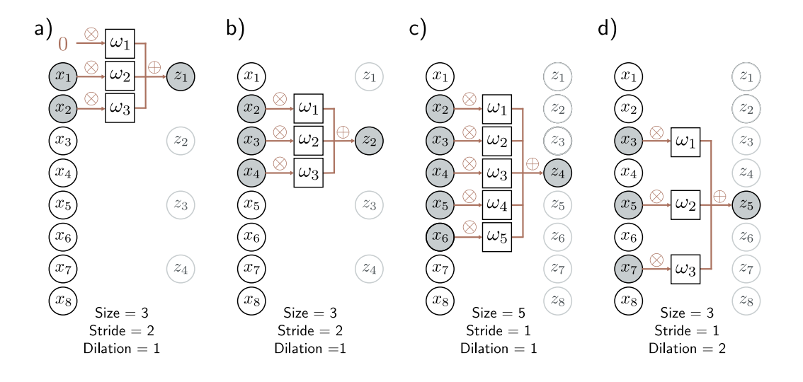
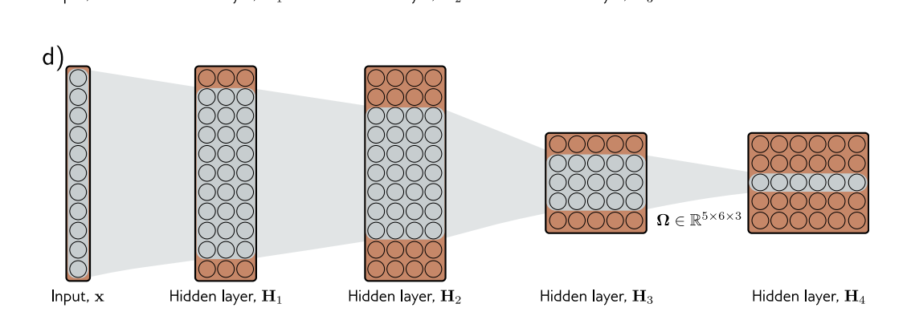
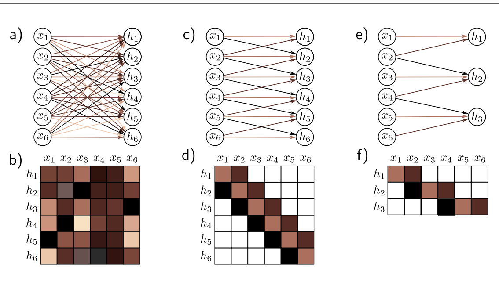
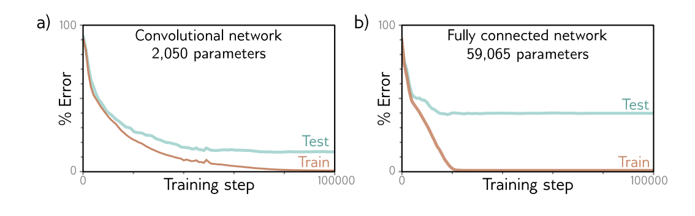
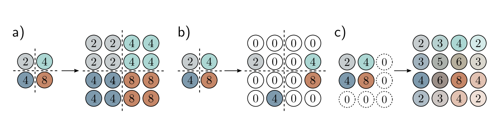
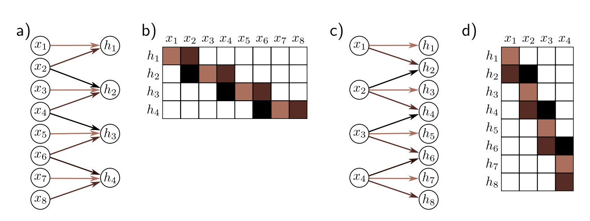
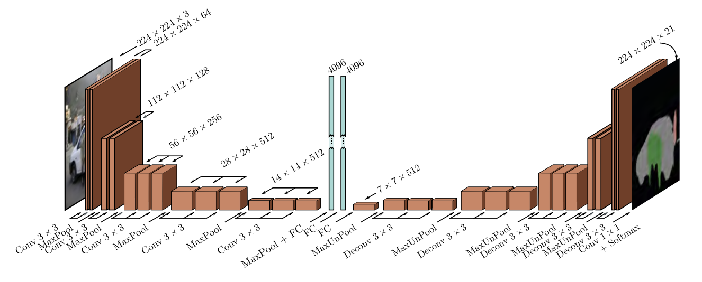
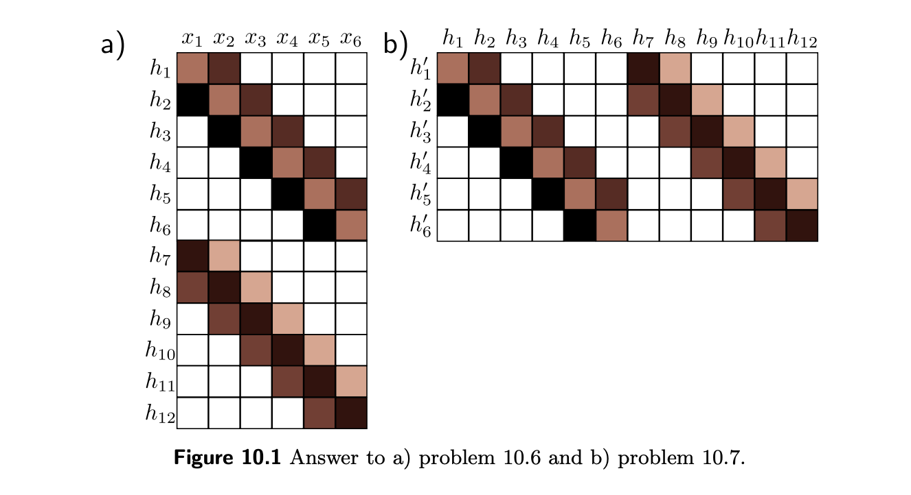
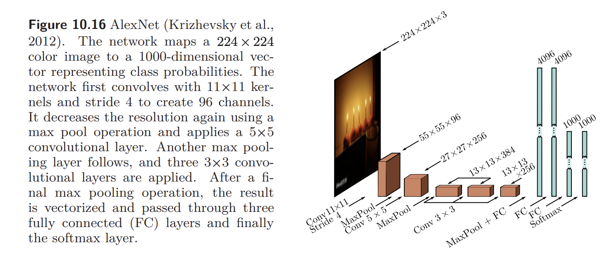

C10.Convolution Neural Network
1.Invariance and Equivariance
图像是高纬度的、有结构的, 直接用全连接层(Affine)去处理图像很糟糕: 高纬度输入让参数爆炸式增长, 相邻像素间的某种连续性不能在Affine层得到利用(即使图像的像素随机重排也不影响Affine)
我们想要得到一个能利用图像数据内在结构的映射, 该映射应该具有如下特性:
Invariance 设我们想要的映射为$f[\bold x]$, ?对于rigid变换$t[\bold x]=\bold Q \bold x+ \bold b$, 包括旋转、翻转、平移?, $\textcolor{red}{\bold{Error}}$ t似乎是permutation, invariance指以下性质:($f: \R^n\rightarrow \R$)
Equivariance 指以下性质:??见Problem10.1 ($f:\R^n\rightarrow\R^n$)
2.CNN for 1D Input
2.1.基础概念
卷积 对于1D, 卷积就是向量 $\bold x$ 到向量 $\bold z$ 的变换, s.t.输出 $z_i$ 是输入 $x_i$ 附近的加权求和.
def(kernel) kernel就是上述求和的权值$\{\omega_1,\omega_2,\omega_3\}$

卷积还包括一些操作:
1.padding 为了防止输出维度变小, 在输入的边缘添加0, 或者当一个环(omitted)
2.kernel size、stride、Dilation stride 为2可以让输出大致减半(omtted)
3.input channel、output channel 增加输出channel可以保留信息, 而不至于让丰富的多channel输入信息过早的被压缩到只剩下一点
卷积层 别忘了, 网络中的convolutional layer还有激活函数和bias:
def(receptive field) 就是感受野(omitted)

每层的卷积核大小都为3, 步进为1, 第4层的感受野才能覆盖整个11维的输入
2.2.全连接 vs 1D conv
2.2.1.参数的个数
卷积层与全连接层的关系 上面这行卷积层式子只用了$3$个权值参数和$1$个偏置, 而同等输出维度的全连接层会使用$n \times n$个权值和$n$个偏置.
权值放到同一个矩阵里可以表示成如下的模样:

CNN的权值只用了3个, 虽然矩阵的非零元素很多, c的步进为1, e的步进为2.
2.2.2.泛化性能
使用mnist1d数据集识别手写数字(实际上, 1dCNN一般用在语音数据、金融数据上), 结果如下:

虽然全连接层有足够的灵活度, 可以轻易达到和1dCNN相同的训练误差, 但泛化性能已经悄然拉开距离.
3.CNN for 2D input
e.g.channel RGB照片就可以视为3个channel的input
(omitted)
4.Downsampling & upsampling & channel change
如果stride=1, 隐藏层需要很多才能让最后一层的感受野覆盖整个输入, downsampling就是快速降低隐藏层维度的方法.
upsampling指提升维度的方法.
4.1.downsampling
方法1: stride 让stride=2可以在每次卷积后维度大约减半.
方法2: pooling 使用2×2的池化层可以让维度减半, 池化层对每个输入channel独立操作, 输出的channel和输入的channel一样; 特别的, max pooling还有一定的稳定性.
4.2.upsampling
想象downsampling的反转~
方法1: 双倍输入 将每个值重复三次, 大小翻倍
方法2: max unpooling 反转的max pooling, 需要在max pooling的时候记住max值的位置, 在unpooling的时候放回到原来位置上
方法3: bilinear interpolation 在间隙插入值, 插入值取两端的均值

方法4: transposed convolution 将stride=2的convolution输入输出对掉, 相应的权值矩阵也正好是原conv矩阵的转置

so cool
4.3.channel change
通过1×1滤波器做卷积层可以快速改变数据的channel, 参数的个数为$1 \times 1 \times C_i \times C_o$ , 相当于单个像素的全部channel做相同的线性变换
5.CNN实例
5.1.image classification(omitted)
image net 比赛
5.2.object detection(不懂)
step 1 训练一个传统的分类识别CNN, 将图像均分为7×7区块分别识别分类概率
step 2 encode 7×7 grid with $(x, y, height, width, confidence)$ (不懂在干什么)
step 3 remove some box
5.3.semantic segmentation
step 1 训练一个沙漏状的CNN, 得到输出图像每个像素点上的分类概率

step 2 使用贪心算法合并区块
§Problems
Problem10.1
Show that the operation in equation 10.3 is equivariant with respect to translation.
Proof $\bold z = f(\bold x)$可以写成如下矩阵形式:
即可以写为$\bold z = \bold W \bold x$
又, $t(\bold x) = \bold Q \bold x + \bold b$
则有:
$\color{red}\bold{Answer}$
你需要意识到$f(x)$是一个标量函数, 所以有很多个值$f_i(x)$
Problem10.6
Draw a $12×6$ weight matrix in the style of figure 10.4d relating inputs $x_1, . . . , x_6$ to outputs $h_1, . . . , h_{12}$ in the multi-channel convolution as depicted in figures 10.5a–b.
Solution
$\color{red}\bold{Answer}$ 见下问, 是multi-channel哦, 不要理解错题目意思了
Problem10.7
Draw a $6×12$ weight matrix in the style of figure 10.4d relating inputs $h_1, . . . , h_{12}$ to outputs $h ' _1, . . . , h' _6$ in the multi-channel convolution in figure 10.5c.
$\color{red}\bold{Answer}$

Problem10.16
Consider the AlexNet network (figure 10.16). How many parameters are used in each convolutional and fully connected layer? What is the total number of parameters?

Solution
得到:
$\color{red}\bold{Answer}$ 第一个全连接层算错了哦, 应该是:
注意到, $6\times6$的卷积核甚至不是奇数, 实际上数据$13\times13\times256$先经过max-pooling 变为$6\times6\times256$, 随后经过$6\times6\times256$的卷积核将数据变为$1\times1\times1$, 再加上4096个频道, emmm所以全连接指的是$1\rightarrow4096$的全连接吧.
所以答案应该是:
Problem10.19
Consider two hidden layers of size $224×224$ with $C_1$ and $C_2$ channels, respectively, connected by a $3×3$ convolutional layer. Describe how to initialize the weights using He initialization.
Solution 每个值是上一层$9\times C_1$个值的线性组合, 这与$C_2$没有关系, 所以直接采用
的正态分布